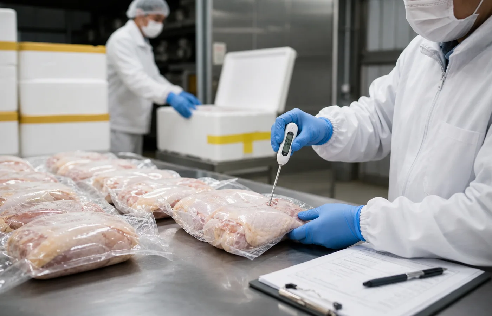

香港食物製造工場
持有香港食物製造廠牌照，以不鏽鋼設備、衛生動線與專業團隊管理生產環境。
- 原料到成品批次記錄
- 風味研發與出品抽檢
- 標準化包裝與交付規格
- 按產品類型建立收貨、加工、包裝、出貨檢查點
- 以 0-4°C 冷鏈溫控支援冰鮮及熟食產品交付
- 可配合客戶做規格表、標籤資料及批次追蹤紀錄
Quality & Logistics
由原材料驗收到成品配送，嚴守食安、溫控、包裝與交付標準。
持有香港食物製造廠牌照，以不鏽鋼設備、衛生動線與專業團隊管理生產環境。

Control Points
品質冷鏈不只是低溫運輸，而是把採購、加工、包裝、標籤、批次及交付紀錄串起來。當客戶需要追溯某一批產品時，團隊可以由產品名稱、交付日期及批次資料回查供應與加工資訊。
Client Support